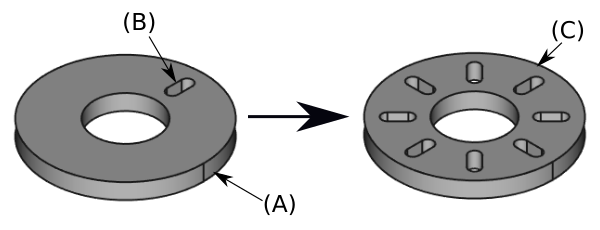

PartDesign PolarPattern/tr
|
|
| Menu location |
|---|
| Part Design → Transformation Features → Polar Pattern |
| Workbenches |
| PartDesign |
| Default shortcut |
| None |
| Introduced in version |
| - |
| See also |
| PartDesign MultiTransform |
Tanım
The  PartDesign PolarPattern tool creates a polar pattern of one or more features.
PartDesign PolarPattern tool creates a polar pattern of one or more features.
{kind=link}

A slot-shaped pocket (B) made on top of a base pad (A, also referred to as support) is used for a polar pattern. The result (C) is shown on the right.
Usage
Create
- Optionally activate the correct Body.
- Optionally select one or more features in the Tree View or the 3D View.
- There are several ways to invoke the tool:
- Press the
 Polar Pattern button.
Polar Pattern button. - Select the Part Design → Transformation Features → Polar Pattern option from the menu.
- Press the
- If there is no active Body, and there are two or more Bodies in the document, the Active Body Required dialog will open and prompt you to activate one. If there is a single Body it will be activated automatically.
- The Polar Pattern Parameters task panel opens. See Options for more information.
- Press the OK button to finish.
Edit
- Do one of the following:
- The Polar Pattern Parameters task panel opens. See Options for more information.
- Press the OK button to finish.
Options
- Choose the mode:
- Transform body: Transforms the whole base feature's shape (default). introduced in 1.0
- Transform tool shapes: Transforms the individual tool shapes of selected features.
- To add features:
- To remove features:
- If there are several features in the pattern, their order can be important. See Ordering features.
- Specify the Axis of the pattern:
- Normal sketch axis: The Z-axis of the sketch (only available for sketch-based features).
- Vertical sketch axis: The Y-axis of the sketch (idem).
- Horizontal sketch axis: The X-axis of the sketch (idem).
- Construction line #: A separate entry for each construction line in the sketch (idem).
- Base X-axis: The X-axis of the Body.
- Base Y-axis: The Y-axis of the Body.
- Base Z-axis: The Z-axis of the Body.
- Select reference…: Select a Datum Line in the Tree View or a Datum Line or edge in the 3D View.
- Check the Reverse direction checkbox to reverse the pattern.
- introduced in 1.0: Specify the angle Mode:
- Overall Angle: Enter the overall Angle. If the angle is less than 360°, the occurrences are evenly distributed from 0° (first occurrence) to the given angle (last occurrence). If the angle is 360°, the occurrences are evenly distributed around the circle. For n occurrences an angle of 360° is equivalent to an angle of 360°*(1-1/n).
- introduced in 1.0: Offset Angle: Enter the Offset angle from a given point on the first occurrence to the same point on the next occurrence. For n occurrences: OverallAngle=(n-1)*Offset.
- Specify the number of Occurrences (including the original feature).
- introduced in 1.2: The angle or offset and occurrence values can also be edited with On-View Parameters in the 3D View.
- If the Recompute on change checkbox is checked the view will update in real time.
Ordering features
If some of the selected features are additive and others subtractive, their order can have have an impact on the final result. You can change the order by dragging individual features in the list.
{kind=link}
Effect of the feature order
Limitations
- Any shape in the pattern that does not overlap the parent feature will be excluded. This ensures that a PartDesign Body always consists of a single, connected solid.
- The PartDesign patterns are not yet as optimized as their Draft counterparts. So for a large number of instances you should consider using a Draft PolarArray instead, combined with a Part boolean operation. This may require major changes to your model as you are leaving PartDesign and therefore cannot simply continue with further PartDesign features in the same body. An example is shown in this Forum topic.
- A pattern cannot be applied directly to another pattern, be it polar, linear or a mirror. For this you need a PartDesign MultiTransform.
- Helper tools: New Body, New Sketch, Attach Sketch, Edit Sketch, Validate Sketch, Check Geometry, Sub-Shape Binder, Clone
- Modeling tools:
- Additive tools: Pad, Revolution, Additive Loft, Additive Pipe, Additive Helix, Additive Box, Additive Cylinder, Additive Sphere, Additive Cone, Additive Ellipsoid, Additive Torus, Additive Prism, Additive Wedge
- Subtractive tools: Pocket, Hole, Groove, Subtractive Loft, Subtractive Pipe, Subtractive Helix, Subtractive Box, Subtractive Cylinder, Subtractive Sphere, Subtractive Cone, Subtractive Ellipsoid, Subtractive Torus, Subtractive Prism, Subtractive Wedge
- Boolean: Boolean Operation
- Dress-up tools: Fillet, Chamfer, Draft, Thickness
- Transformation tools: Mirror, Linear Pattern, Polar Pattern, Multi-Transform, Scale
- Additional tools: Shape Binder, Involute Gear, Sprocket, Shaft Design Wizard
- Context menu: Suppressed, Set Tip, Move Object To…, Move Feature After…
- Preferences: Preferences, Fine tuning
- Getting started
- Installation: Download, Windows, Linux, Mac, Additional components, Docker, AppImage, Ubuntu Snap
- Basics: About FreeCAD, Interface, Mouse navigation, Selection methods, Object name, Preferences, Workbenches, Document structure, Properties, Help FreeCAD, Donate
- Help: Tutorials, Video tutorials
- Workbenches: Std Base, Assembly, BIM, CAM, Draft, FEM, Inspection, Material, Mesh, OpenSCAD, Part, PartDesign, Points, Reverse Engineering, Robot, Sketcher, Spreadsheet, Surface, TechDraw, Test Framework
- Hubs: User hub, Power users hub, Developer hub